论文精读7：PNN
论文题目：Product-based Neural Networks for User Response Prediction
作者：交大张伟楠老师及其合作者
发表时间：2016年
1 研究背景
目前平台上的数据大部分是通过独热编码转换成高维稀疏二进制特征表示。对于这种极端的稀疏性数据，传统模型从数据中挖掘特征的能力较差。
PNN 论文是构建一个预测模型来估计用户在给定上下文中单击特定广告的概率。
例如当前的用户所处的场景是【星期日：周二，性别：男性，所在城市：伦敦】，那么可以使用独热编码表示为以下形式：
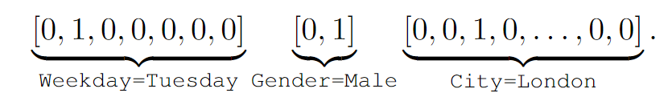
许多机器学习模型已经被提出来处理这种高维稀疏二元特征并有不错的效果，但是这种形式过度依赖特征工程来捕获高阶的潜在模式。可以使用 DNN 自动学习更具表现力的特征表示并提供更好的预测性能。
2 模型结构
PNN 的模型结构图如下：
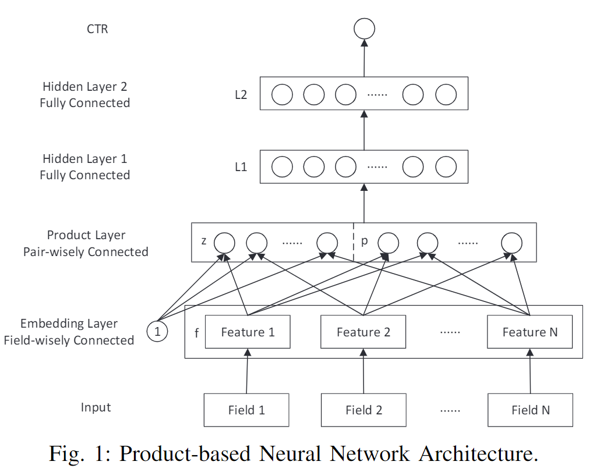
2.1 输出层
从自顶向下的角度来看，PNN的输出是一个实数 作为预测的CTR：
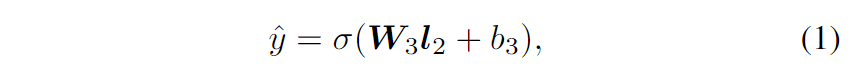
其中 和 是输出层的参数， 是第二个隐藏层的输出， 是 sigmoid 激活函数：。使用 来表示第 个隐藏层的维度。
2.2 L2 层
第二个隐藏层的输出 L2 构造为：
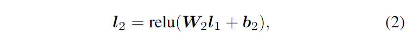
其中 是第一个隐藏层的输出。选择整流线性单元 (relu) 定义为 作为隐藏层输出的激活函数，因为它具有出色的性能和高效计算。
2.3 L1 层
第一个隐藏层与 Product 层完全连接。它的输入由线性信号 和二次信号 组成。对于 和 输入， 的公式为：
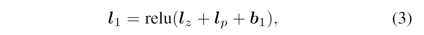
其中所有 、 和偏置向量 。
2.4 Product 层
首先定义向量的内积操作如下：
其中首先将逐元素乘法应用于 A、B，然后将乘法结果相加为标量。之后， 和 分别通过 和 计算：
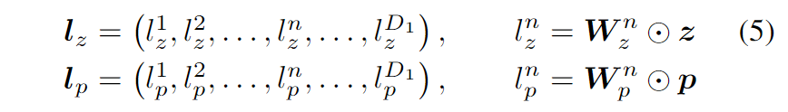
其中 和 是 Product 层中的权重，它们的形状分别由 和 决定。
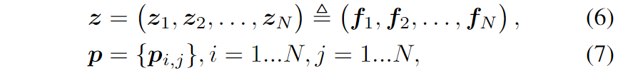
和 是相等的，这里的 就是嵌入层的输出。PNN 模型可以通过为 设计不同的操作来实现不同的实现，即 IPNN 和 OPNN。
最后，使用监督训练来最小化对数损失，这是一种广泛使用的目标函数，用于捕获两个概率分布之间的差异，其实就是交叉熵。
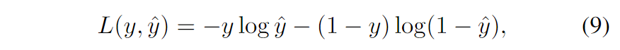
3 IPNN
在IPNN中，将成对特征交互定义为向量内积：。之后使用常量“1”，线性信息 计算如下：
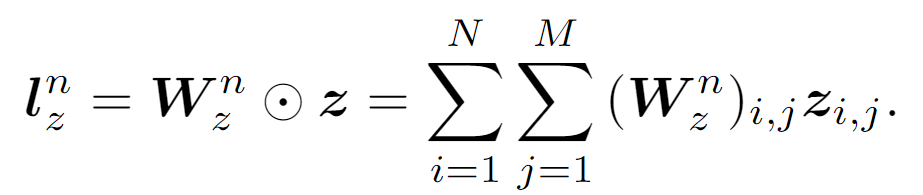
对于 来说， 的成对内积项形成一个方阵 。回想一下式（5）中 的定义， 和向量内积中的交换律 和 应该是对称的。
4 OPNN
IPNN 和 OPNN 之间的唯一区别是二次项 的计算。在 OPNN 中，。因此，对于 中的每个元素， 是一个方阵。
在原文中对于 IPNN 和 OPNN 都对时间复杂度进行了优化，这里没有阐述~
5 讨论
可以先训练PNN的一部分（如FNN或FM部分）作为初始化，然后开始让反向传播覆盖整个网络。生成的PNN至少应该与FNN或FM一样好。
向量乘积可以看作是一系列加法/乘法运算。内积和外积只是两种实现。事实上可以定义更通用或更复杂的产品层，在探索特征交互方面获得更好的 PNN 能力。
与电子电路类似，加法像“OR”门，而乘法像“AND”门，乘积层似乎学习特征以外的规则。回顾计算机视觉的场景，而图像中的像素是真实世界的原始特征，web应用程序中的分类数据是具有高层次和丰富含义的人工特征。逻辑是处理概念、领域和关系的强大工具。因此，在神经网络中引入乘积运算可以提高网络对多场分类数据建模的能力。
6 实验
6.1 评估指标
- AUC：ROC曲线下的面积是评估分类问题中广泛使用的指标。此外，很多工作验证了 AUC 作为 CTR 估计的很有效的指标。
- RIG：相对信息增益，RIG = 1−NE，其中 NE 是归一化交叉熵。
6.2 实验结果
表 I 和 II 中的总体结果表明：
- FM 优于 LR，证明了特征交互的有效性；
- 神经网络优于 LR 和 FM，这验证了高阶潜在模式的重要性；
- PNN 在 Criteo 和 iPinYou 数据集上表现最好。至于RMSE 和 RIG，结果相似。
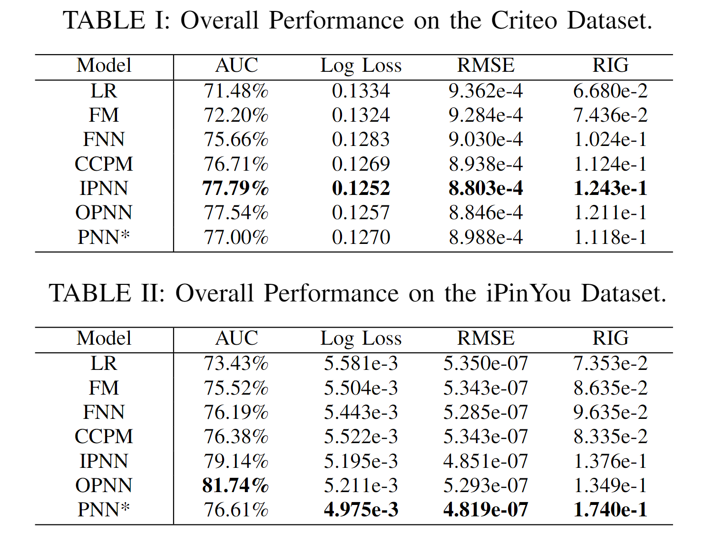
图 3 显示了 iPinYou 数据集上训练迭代的 AUC 性能。可以发现 PNN 模型比 LR 和 FM 收敛得更快。另外，两个 PNN 比其他网络模型具有更好的收敛性。
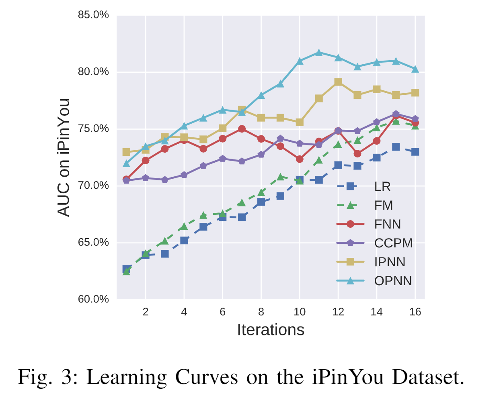
不同的 Dropout 参数对AUC 也有一定的影响，实验表明，当 Dropout 为0.5 时 AUC 最高。
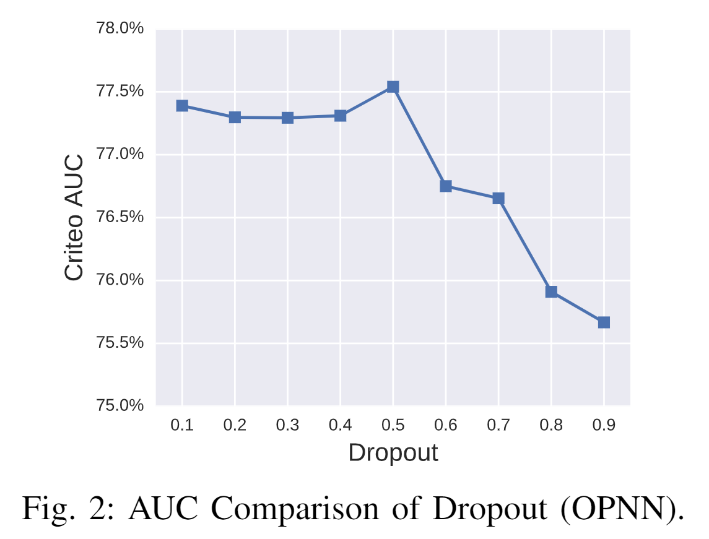
6.3 消融实验
6.3.1 网络深度
较了不同数量的隐藏层：1、3、5 和 7。图 4 显示了随着网络深度的增长的性能。一般来说，具有 3 个隐藏层的网络在测试集上具有更好的泛化能力。
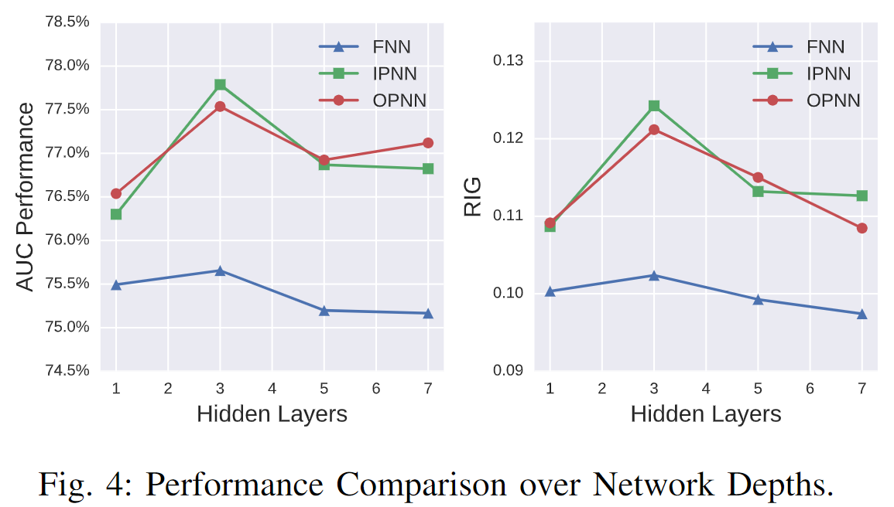
6.3.2 激活函数
与 sigmoid 家族相比，relu 函数具有稀疏性和高效梯度的优点，可以在多分类数据上获得更多好处。
图 5 比较了 FNN、IPNN 和 OPNN 上的这些激活函数。可以发现 tanh 比 sigmoid 具有更好的性能。除了 tanh，我们发现 relu 函数也具有良好的性能。可能的原因包括：
- 稀疏激活，输出为负的节点不会被激活；
- 高效的梯度传播，没有消失梯度问题或爆炸效应；
- 高效计算，仅比较、加法和乘法。
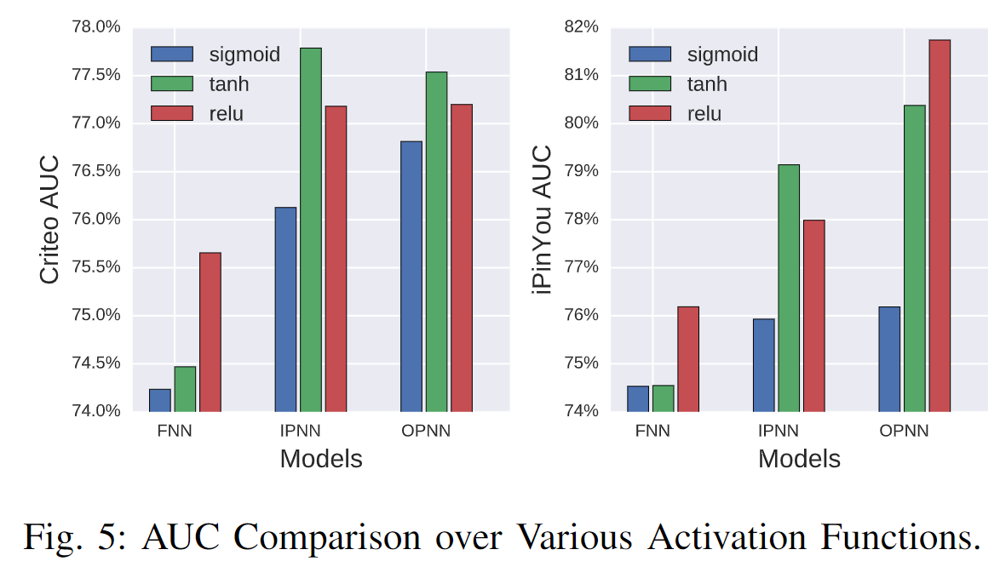
 微信
微信 支付宝
支付宝